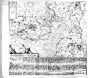
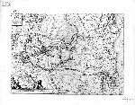

a.
Nieuwe kaerte van Breda belegert door sijne Altesa Frederick Hendrick van Nassou Prince
van Orangien den 23 Iuly 1637. [Schaal circa 1:45.000.] Kopergravure, 350 x 485 mm. Met
toelichting in boekdruk in zes kolommen onder de prent. Amsterdam, C.J. Visscher
excude[bat], 1637. -- (COLLBN Port. 7 N 133)
b. Dezelfde prent met wijzigingen in het kaartbeeld. Zonder de toelichting in
boekdruk. -- (COLLBN Port. 7 N 134)
Het ‘kort en bondigh’ verhaal, dat de eerste kaart begeleidt, is het alleszins waard om zorgvuldig gelezen te worden, want het geeft een inzicht in wat er in de zeventiende eeuw kwam kijken bij een groots opgezet beleg van een stad zoals Breda.
Van Bergen op Zoom en Geertruidenberg -- van waaruit de proviandering plaatsvond -- tot aan de Schenkenschans bij Nijmegen, aan het andere uiteinde van Brabant, waren er troepenbewegingen. Gebieden rondom het door de Spanjaarden heroverde Breda werden geïnundeerd. In een wijde boog rond de stad werden belegeringswerken uitgevoerd, die haar van de buitenwereld moesten afsluiten. Die grachten en loopgraven, zo staat in het commentaar, waren gegraven door boeren, die uit heel Brabant, maar ook uit Zuid-Holland voor dat doel waren opgeroepen.
Prenten als deze werden in de zeventiende eeuw als nieuwsbericht uitgebracht. Telkens wanneer de ontwikkelingen van een beleg daartoe aanleiding gaven werd de koperen plaat opgewerkt en men kon in het erbij afgedrukte verslag nalezen hoe de strijd verliep. Aan het eind van de tekst kondigt uitgever Claes Jansz Visscher -- zie zijn ‘vignet’, een vissertje -- aan dat er te gelegener tijd een vervolg op het verslag zal komen. Dit vervolg is helaas bij de tweede versie van deze prent niet afgedrukt, zodat we ons tevreden moeten stellen met de veranderingen op het ‘visuele’ vlak.
Op het moment dat prenten als deze, met tekst en al, werden uitgebracht, was -- we mogen dat wel bedenken -- de definitieve uitkomst van de gebeurtenis nog niet bekend; we hebben hier dus te maken met werkelijk ‘nieuws’ en met, op de achtergrond, ‘verslaggevers’.
Literatuur
- F. Muller, De Nederlandsche geschiedenis in platen. Beredeneerde beschrijving van Nederlandsche historieplaten, zinneprenten en historische kaarten. Amsterdam 1863-1882. 4 dln, I, nr. 1766a en IV, nr. 1766e.
| vorige pagina | top pagina |